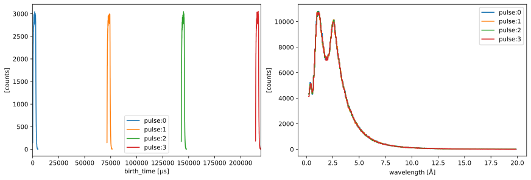
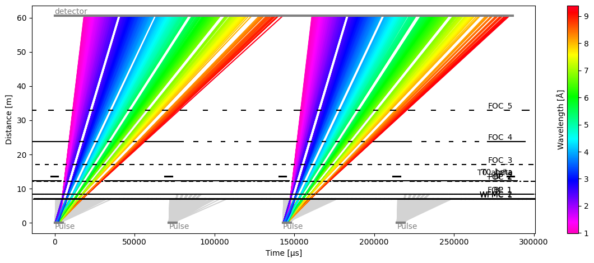
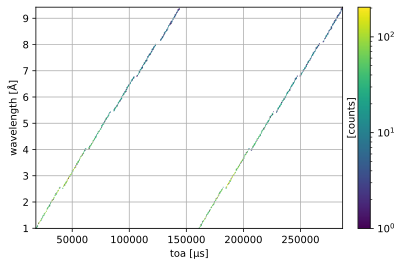
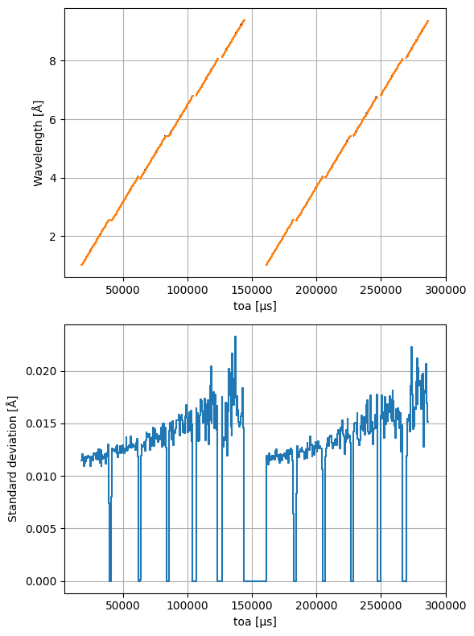
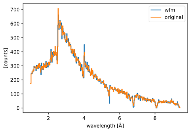

ODIN in WFM mode#
This is a simulation of the ODIN chopper cascade in WFM mode. We also show how one can convert the neutron arrival times at the detector to wavelength.
[1]:
import scipp as sc
import plopp as pp
import tof
Create a source pulse#
We first create a source with 4 pulses containing 500,000 neutrons each, and whose distribution follows the ESS time and wavelength profiles (both thermal and cold neutrons are included).
[2]:
source = tof.Source(facility="ess", neutrons=500_000, pulses=4)
source.plot()
[2]:

Component set-up#
The ODIN chopper cascade consists of:
2 WFM choppers
5 frame-overlap choppers
2 band-control choppers
1 T0 chopper
It also has a single detector panel 60.5 meters from the source.
These component parameters are pre-configured in tof.facilities.ess. Here we select the configuration in pulse-skipping mode:
[3]:
odin_params = tof.facilities.ess.odin(pulse_skipping=True)
odin_params
[3]:
{'choppers': [Chopper(name=WFMC_1, distance=6.85 m, frequency=56.0 Hz, phase=93.244 deg, direction=CLOCKWISE, cutouts=6),
Chopper(name=WFMC_2, distance=7.15 m, frequency=56.0 Hz, phase=97.128 deg, direction=CLOCKWISE, cutouts=6),
Chopper(name=FOC_1, distance=8.4 m, frequency=42.0 Hz, phase=81.303297 deg, direction=CLOCKWISE, cutouts=6),
Chopper(name=BP_1, distance=8.45 m, frequency=7.0 Hz, phase=31.08 deg, direction=CLOCKWISE, cutouts=1),
Chopper(name=FOC_2, distance=12.2 m, frequency=42.0 Hz, phase=107.013442 deg, direction=CLOCKWISE, cutouts=6),
Chopper(name=BP_2, distance=12.25 m, frequency=7.0 Hz, phase=44.224 deg, direction=CLOCKWISE, cutouts=1),
Chopper(name=T0_alpha, distance=13.5 m, frequency=14.0 Hz, phase=179.672 deg, direction=CLOCKWISE, cutouts=1),
Chopper(name=T0_beta, distance=13.7 m, frequency=14.0 Hz, phase=179.672 deg, direction=CLOCKWISE, cutouts=1),
Chopper(name=FOC_3, distance=17.0 m, frequency=28.0 Hz, phase=92.993 deg, direction=CLOCKWISE, cutouts=6),
Chopper(name=FOC_4, distance=23.69 m, frequency=14.0 Hz, phase=61.584 deg, direction=CLOCKWISE, cutouts=6),
Chopper(name=FOC_5, distance=33.0 m, frequency=14.0 Hz, phase=82.581 deg, direction=CLOCKWISE, cutouts=6)],
'detectors': [Detector(name=detector, distance=60.5 m)]}
Run the simulation#
We propagate our pulse of neutrons through the chopper cascade and inspect the results.
[4]:
model = tof.Model(source=source, **odin_params)
results = model.run()
results.plot(blocked_rays=5000)
[4]:
Plot(ax=<Axes: xlabel='Time [μs]', ylabel='Distance [m]'>, fig=<Figure size 1200x480 with 2 Axes>)

We can see that the chopper cascade is implementing WFM and pulse-skipping at the same time!
Wavelength as a function of time-of-arrival#
Plotting wavelength vs time-of-arrival#
Since we know the true wavelength of our neutrons, as well as the time at which the neutrons arrive at the detector (coordinate named toa in the detector reading), we can plot an image of the wavelengths as a function of time-of-arrival:
[5]:
# Squeeze the pulse dimension since we only have one pulse
events = results['detector'].data.flatten(to='event')
# Remove the events that don't make it to the detector
events = events[~events.masks['blocked_by_others']]
# Histogram and plot
events.hist(wavelength=500, toa=500).plot(norm='log', grid=True)
[5]:

Defining a conversion from toa to wavelength#
The image above shows that there is a pretty tight correlation between time-of-arrival and wavelength.
We compute the mean wavelength inside a given toa bin to define a relation between toa and wavelength.
[6]:
binned = events.bin(toa=500)
# Weighted mean of wavelength inside each bin
mu = (
binned.bins.data * binned.bins.coords['wavelength']
).bins.sum() / binned.bins.sum()
# Variance of wavelengths inside each bin
var = (
binned.bins.data * (binned.bins.coords['wavelength'] - mu) ** 2
) / binned.bins.sum()
We can now overlay our mean wavelength function on the image above:
[7]:
import matplotlib.pyplot as plt
fig, ax = plt.subplots(2, 1)
f = events.hist(wavelength=500, tof=500).plot(norm='log', cbar=False, ax=ax[0])
mu.name = 'Wavelength'
mu.plot(ax=ax[0], color='C1', grid=True)
stddev = sc.sqrt(var.hist())
stddev.name = 'Standard deviation'
stddev.plot(ax=ax[1], grid=True)
fig.set_size_inches(6, 8)
fig.tight_layout()

Computing wavelengths#
We set up an interpolator that will compute wavelengths given an array of toas.
[8]:
from scipp.scipy.interpolate import interp1d
# Set up interpolator
y = mu.copy()
y.coords['toa'] = sc.midpoints(y.coords['toa'])
f = interp1d(y, 'toa', bounds_error=False)
# Compute wavelengths
wavs = f(events.coords['toa'].rename_dims(event='toa'))
wavelengths = sc.DataArray(
data=sc.ones(sizes=wavs.sizes, unit='counts'), coords={'wavelength': wavs.data}
).rename_dims(toa='event')
wavelengths
[8]:
- event: 60985
- wavelength(event)float64Å7.254, 1.566, ..., 4.065, 4.180
Values:
array([7.25422223, 1.56612644, 3.6365712 , ..., 1.26616277, 4.0646207 , 4.18003443], shape=(60985,))
- (event)float64counts1.0, 1.0, ..., 1.0, 1.0
Values:
array([1., 1., 1., ..., 1., 1., 1.], shape=(60985,))
We can now compare our computed wavelengths to the true wavelengths of the neutrons:
[9]:
pp.plot(
{
'wfm': wavelengths.hist(wavelength=300),
'original': events.hist(wavelength=300),
}
)
[9]:
